First decision: which layer first
Watch the film without music: is every line clear, is ambience continuous, does a cut drop into silence. If dialogue is unclear, fix dialogue; if ambience breaks, add room tone; if effects fight, lower effects. Music is the last emotional layer, not the first.
Split everything into DX dialogue, AMB ambience, SFX effects, MX music. Stems are not for a tidy session; they let you replace one layer without touching the rest.
Dialogue: keep breath before denoise
Dialogue cleanup does three things: remove low rumble, tame obvious sibilance, and fix level jumps. Do not remove all breath and mouth detail for “clean”; it starts to sound dubbed. Denoise in small sections, not one setting for the whole track.
The goal is not identical level on every line; it is consistency within a scene. Two people a metre apart should not sound as loud as ten metres apart. The audience needs space.
Ambience and effects: continuity before richness
Lay continuous ambience first: at least ten seconds of room tone per scene, no drop at cuts. Effects serve action and information: doors, steps, cloth, phone vibration. Do not put a punchy effect on every action; the audience starts watching sound instead of story.
Effect direction must match frame: off-screen voices and steps outside a door do not sit in the centre. Stereo is not filling the field; it is telling the audience where things are.
Sound-post chain: dialogue—ambience—effects—music—mix

Music and final mix: enters last, leaves last
Add music last, after dialogue and effects pass. The first music rule is never bury a line: no chorus is worth losing a key sentence. Drop music 3–6 dB where needed; do not make the audience guess.
Check loudness at the final mix: dialogue-led films often sit around -16 LUFS, or follow the platform. Check phone speaker, headphones, and TV, not only the studio monitors.
Failure case: full music, muddy dialogue
A brand film laid full music in the rough cut because the client “felt” it. At the final mix, dialogue was buried, so music came down globally and the film went flat. The team then cleaned dialogue and rebuilt music in sections, doubling the work.
Music is not a cover-up. Fix dialogue first, ambience second, and save music for the end so it has room to do real emotional work.
Cost and acceptance
Low: dialogue cleanup, ambience, one music track, ¥2,000–6,000. Mid: full stems, effects, final mix, loudness, ¥6,000–20,000. High: 5.1/Atmos, ADR, Foley, multiple versions, ¥20,000–80,000+.
Image note. Covers, diagrams and step images on this page are editorial illustrations or structure diagrams, not photographs of a test performed here; they are not evidence of measured gear performance. Where an image is AI-assisted, the caption says so. Read the test conditions in the text before treating an image as proof.